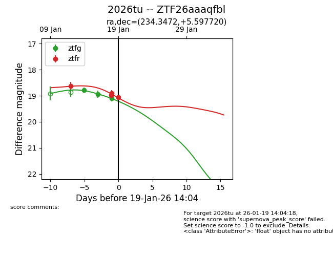
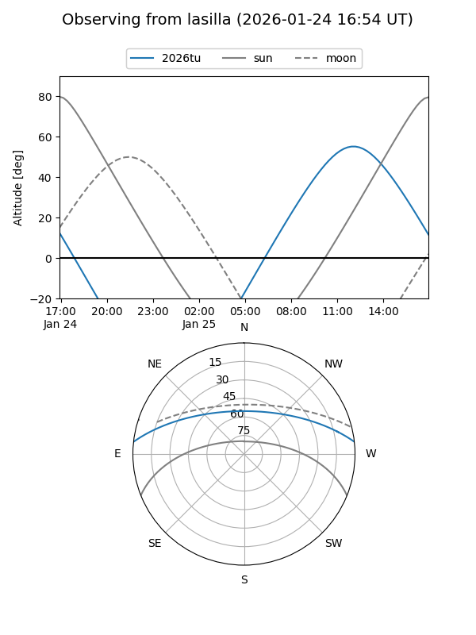
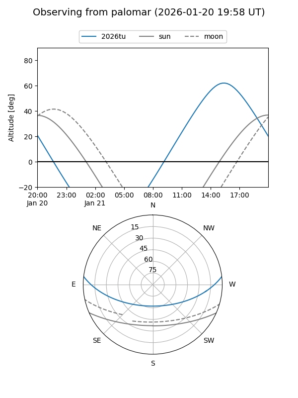
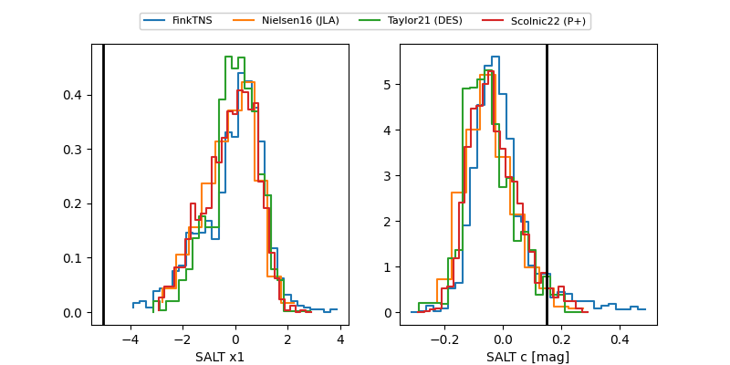

2026tu
Target 2026tu at 2026-01-19 14:05
Aliases and brokers:
FINK: link
Lasair: link
ALeRCE: link
TNS: link
YSE: link
alt names
ZTF26aaaqfbl (ztf,fink_ztf)
2026tu (tns,yse)
Coordinates:
equatorial (ra, dec) = 234.3472,+5.59772
equatorial (HMS+DMS) = 15:37:23.32,+05:35:51.79
galactic (l, b) = (11.9278,+45.07139)
Flags:
Photometry:
last ztfg=19.10, ztfr=19.05
3 ztfg, 4 ztfr detections
Lightcurve

Visibility


Additional plots
